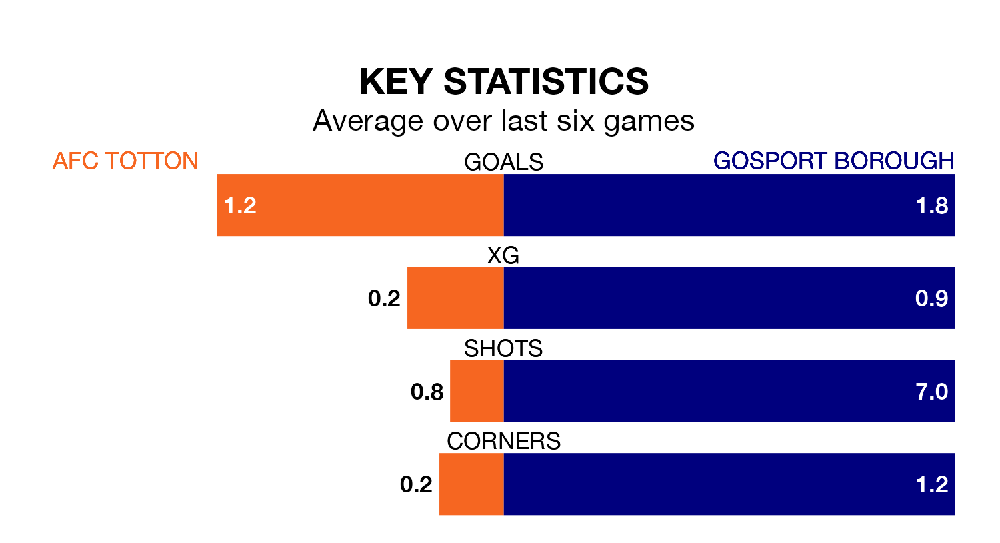

Gosport Borough travel to the Testwood Stadium for Saturday's match against AFC Totton looking to bounce back from defeat last time out in Southern League Premier South.
Gosport, who sit fourth in the league after 24 games, fell to a 4-3 away defeat to Bracknell Town on January 20.
They face a Totton side who picked up a win in their last match, a 1-0 victory against Harrow Borough, and who sit fifth in the table.
With 49 goals in 24 games so far this season, Totton are scoring more than average in the league with 2.0 goals per game. And they are conceding fewer than average, letting in 29 goals at a rate of 1.2 per game.
Gosport are also above average scorers, with 2.0 goals per game, compared to a league average of 1.7. They have conceded 1.0 goal per game.
The home side are in mixed form in Southern League Premier South, with two wins and three draws from their last six games.
With two wins and two draws over that period, Borough's form is slightly worse – they have taken eight points from 18, compared to Totton's nine.
Updated: 09:07 (UTC), 24/01/24